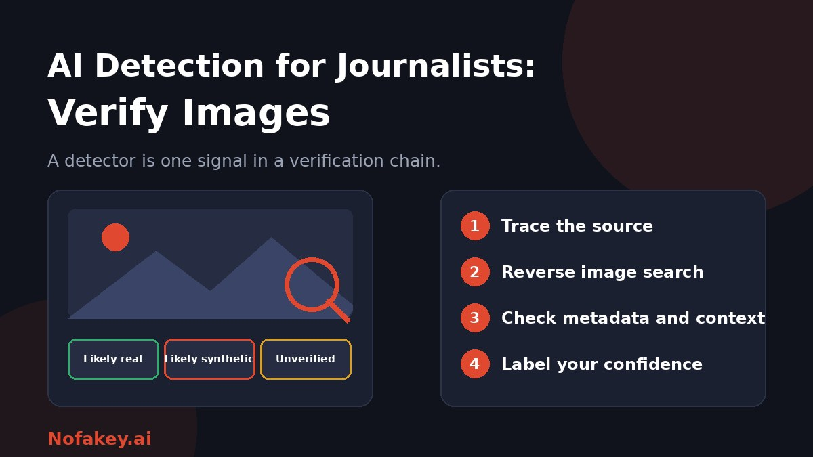

A dramatic photo is spreading from a breaking news scene. Readers are sharing it, and your editor wants to know: is it real? AI image detectors promise a fast answer, but for journalists, speed without certainty can be costly. This guide shows how to use AI detection as one signal inside a proper image verification workflow.
Why detection alone is not enough for journalists
Visual clues that once exposed AI images, such as malformed hands, are fading as tools improve. A journalist trained on old tells can wrongly clear a convincing fake because it passes outdated tests. Detectors have their own limits: they return probabilities, can miss edited or recompressed images, and can wrongly flag real photos. See are AI detectors accurate? for the wider picture.
There is another trap. Many misleading images are real photos shown with the wrong date, place or story. A detector that says "not AI" tells you nothing about whether the caption is true. Verification has to cover both questions: Is the image authentic, and is its claimed context true?
Know what you are checking for
| Type | What it is | Main check |
|---|---|---|
| Fully AI-generated | Created from a prompt, with no camera involved | No original source or photographer; provenance checks fail |
| AI-edited | A real photo with parts added, removed or changed | Compare with earlier versions and other angles |
| Out of context | A real, unaltered photo with a false date, place or story | Reverse image search and geolocation |
| Traditional manipulation | Photo editing, splicing or cropping | Forensic inspection and source comparison |
A step-by-step image verification workflow
- Trace the source. Who posted it first? Find the earliest known appearance, and check whether the account has a history, a real identity and a link to the event.
- Run a reverse image search. Look for earlier uses of the same image, or near-identical versions, which can expose recycled or altered photos.
- Contact the source. Ask the photographer or poster for the original file, other frames from the same moment, and how and where it was taken.
- Check metadata and content credentials. Look at embedded data and any provenance information. Remember that it is often stripped by platforms and can be edited, so it can support a conclusion but never settle one.
- Test the context. Does the location, weather, shadows, signs, clothing, vehicles and language match the claimed place and time? Can you find other images of the same scene from other sources?
- Inspect the image closely. Zoom in on text, reflections, repeated textures, edges and backgrounds. Treat oddities as reasons to dig further, not as proof.
- Use an AI detector as one signal. Note the result and its confidence, run it on the best-quality version you have, and record that it is not a verdict.
- Consult a colleague or specialist. A second pair of eyes catches mistakes, especially under deadline pressure.
- Label your confidence and document it. Record what you checked and what you found.
What metadata and content credentials can and cannot tell you
- Present metadata may show device, date or editing software, but it can be changed or faked.
- Missing metadata is normal. Social platforms and messaging apps often remove it from genuine photos.
- Content credentials are records of how a file was made. A valid record is useful evidence, but their absence proves nothing.
- Hidden watermarks may exist in some AI output but only a matching detector can read them. Our guide to AI watermark detection explains the limits.
How to use an AI image detector responsibly
- Treat the output as one signal, never as an editorial judgment.
- Use the best available file. Screenshots and heavy compression reduce reliability.
- Try more than one method, and note when results disagree.
- Protect sources and embargoed material. Check how a tool stores uploaded images before using it on sensitive files.
- Never report "AI" or "real" on a detector result alone. Say what evidence supports your conclusion.
Use clear confidence labels
| Label | When to use it | What to do |
|---|---|---|
| Likely real | Several independent signals agree: traceable source, matching context, corroborating images | Publish with a clear credit and caption |
| Likely synthetic | No credible source, context fails, and signals point to AI generation | Do not publish as fact. Consider a debunk |
| Unverified | Signals are mixed, missing or contradictory | Hold it, keep checking, and avoid absolute claims |
Verifying during breaking news
- Expect the most fakes at the most urgent moments. Disasters, conflicts and elections attract fabricated visuals.
- Look for multiple sources. Real events usually produce many images and videos from different angles.
- Be wary of "too perfect" images, and of images that appear with no photographer, no location and no witness.
- Slow down the share button. A short delay to verify protects your outlet's credibility.
- Have a standard process everyone knows, so verification does not depend on one expert.
What about video and audio?
The same principles apply: trace the source, check context, and look for corroboration. Faces and voices can be faked convincingly, so verify the person and the claim, not just the footage. Our guide on what a deepfake is and how to protect yourself covers practical checks.
Be transparent with your audience
- Label AI-generated illustrations clearly, and never present them as photographs. See how to label AI-generated content.
- Explain what you checked when you debunk or confirm an image.
- Correct quickly and visibly if you get it wrong.
- Publish an AI policy that covers images, as well as text. Editors can read our guide on AI detectors for publishers and editors.
Conclusion
For journalists, AI detection is a helpful signal but a poor judge. The reliable path is a documented workflow: trace the source, reverse search, check context and metadata, use a detector as one input, and label your confidence honestly. When in doubt, call it unverified and keep checking. For a quick first read on a suspicious claim or message, paste it into our free checker, and find more guides on the Nofakey.ai blog.
Frequently asked questions
Can journalists rely on AI image detectors?
Not on their own. Detectors give a probability, can be wrong either way, and may miss edited or recompressed images. Use them as one signal alongside source tracing, reverse image search and context checks.
What is the first step to verify a suspicious image?
Trace the source. Find the earliest known appearance, who posted it, and whether the photographer or original account can be contacted.
Is missing metadata a sign an image is fake?
No. Social platforms and messaging apps often strip metadata from real photos. Missing metadata is not proof of anything, and present metadata can be edited.
Are old photos reused as new events more common than AI fakes?
Real images shown with false context are a long-standing problem, so check date, place and earlier use as well as whether an image is synthetic.
How should a newsroom label an image it cannot verify?
Avoid absolute claims. Mark it unverified, explain what was checked, and do not publish it as documentary evidence until multiple independent signals agree.
Want a quick first read on a claim or message?
Run it through the checker